Certificates - NetScaler 12 / Citrix ADC 12.1
Navigation
- Change Log
- Two common methods of getting certificates on NetScaler:
- Import the intermediate certificate and bind it.
- Export/Download certificate files from NetScaler
- Replace the management certificate, and then force SSL access for management.
- Update certificates before they expire.
:idea: = Recently Updated
Change Log
- 2018 Oct 7 - Create Key File - 12.1 build 49 supports AES256 encoding
- Create CSR File - added info from CTX232305 How to create a SAN CSR in NetScaler 12.0 57.19
- 2018 Mar 13 - in Replace Management Certificate section, added link to CTP George Spiers How to secure management access to NetScaler and create unique certificates in a highly available setup
Convert .PFX Certificate to PEM Format
You can export a certificate (with private key) from Windows, and import it to NetScaler.
To export a Windows certificate in .pfx format
- If Windows Server 2012 or newer, on the Windows server that has the certificate, you can run certlm.msc to open the Certificates console pointing at Local Computer.
- Or, run mmc.exe, manually add the Certificates snap-in, and point it to Local Computer.
- Go to Personal > Certificates.
- Right-click the certificate, expand All Tasks, and click Export.
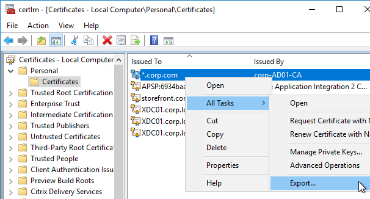
- On the Welcome to the Certificate Export Wizard page, click Next.
- On the Export Private Key page, select Yes, export the private key, and click Next.
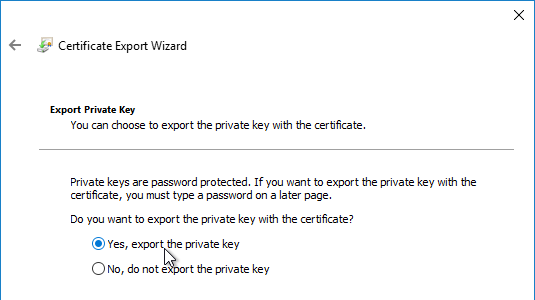
- On the Export File Format page, click Next.
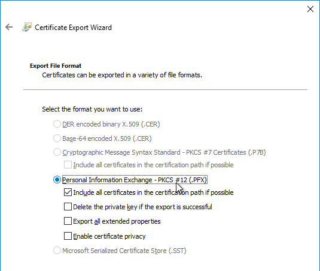
- On the Security page, check the box next to Password, and enter a new temporary password. Click Next.
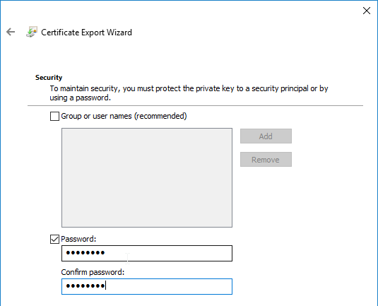
- On the File to Export page, specify a save location and name the .pfx file. Don't put any spaces in the filename. Click Next.
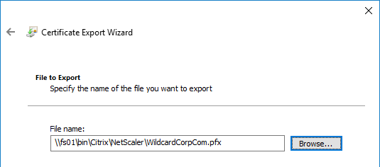
- In the Completing the Certificate Export Wizard page, click Finish.
- Click OK when prompted that the export was successful.
To import a .pfx file
Newer builds of NetScaler ADC (e.g. 12.0 build 59 and 12.1 build 49) import .pfx files and use them in their native encrypted format.
- NetScaler ADC 12.0 build 58 and NetScaler ADC 12.1 build 48 had bugs preventing PFX files from importing correctly. Upgrade to a newer build.
Older builds of NetScaler ADC convert the .pfx file to an unencrypted .pem file that is named the same as the original .pfx file but with an additional .ns extension.
To import the .pfx file:
- On the NetScaler, expand Traffic Management, and click SSL.
- If the SSL feature is disabled, right-click the SSL node, and click Enable Feature.
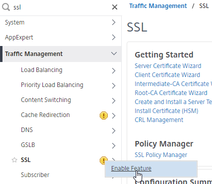
- Go to Traffic Management > SSL > Certificates > Server Certificates.
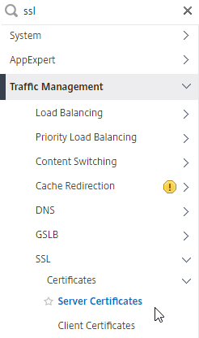
- There are four different certificate nodes:
- Server Certificates have private keys. These certificates are intended to be bound to SSL vServers.
- Client Certificates also have private keys, but they are intended to be bound to Services so NetScaler can perform client-certificate authentication against back-end web servers.
- CA Certificates don't have private keys. The CA certificates node contains intermediate certificates that are linked to Server Certificates. CA certificates can also be used for SAML authentication, and to verify client certificates.
- Unknown Certificates list the certificates that don't fall under the other categories. The Azure SAML certificate shows up here.
- On the left, click the Server Certificates node.
- On the right, click Install.
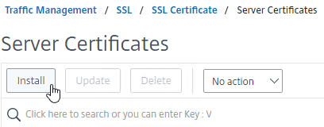
- Give the certificate (Certificate-Key Pair) a name.
- Click the drop-down next to Choose File, select Local, and browse to the .pfx file that you exported earlier.
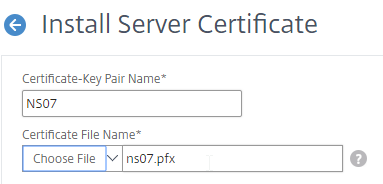
- After browsing to the .pfx file, NetScaler ADC will prompt you to enter the password for the .pfx file.
- Then click Install.
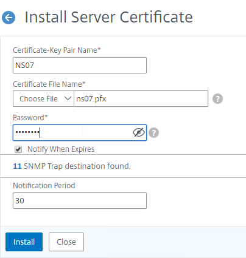
- If you click the information icon next to the new certificate...
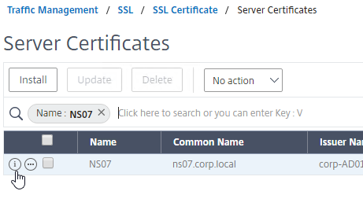
- You’ll see that NetScaler ADC uses the file in native .pfx format. No PEM conversion.
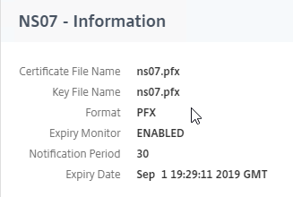
- You’ll see that NetScaler ADC uses the file in native .pfx format. No PEM conversion.
- You can now link an intermediate certificate to this SSL certificate, and then bind this SSL certificate to SSL and/or NetScaler Gateway Virtual Servers.
- To automatically backup SSL certificates and receive notification when the certificates are about the expire, deploy NetScaler Management and Analytics System. Also see Citrix CTX213342 How to handle certificate expiry on NetScaler.
To convert PFX to PEM (with Private Key encryption)
To convert PFX to PEM, do the following:
- In the NetScaler Configuration GUI, on the left, expand Traffic Management, and click SSL.
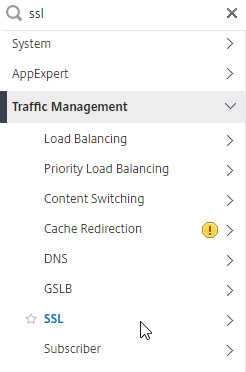
- In the right column of the right pane, in the Tools section, click Import PKCS#12.
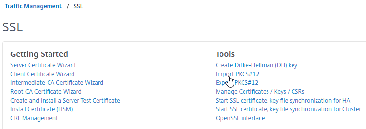
- In the Import PKCS12 File dialog box:
- In the Output File Name field, enter a name for a new file where the converted PEM certificate and private key will be placed. This new file is created under /nsconfig/ssl on the NetScaler appliance.
- In the PKCS12 File field, click Choose File, and select the previously exported .pfx file.
- In the Import Password field, enter the password you specified when you previously exported the .pfx file.
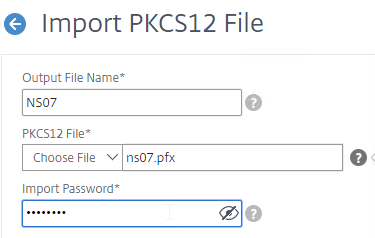
- By default, the private key in the new PEM file is unencrypted. To encrypt the private key, change the Encoding Format selection to AES256 (if NetScaler 12.1 build 49 or newer) or DES3. This causes the new PEM file to be password protected, and encrypted.
- Enter a permanent password for the new PEM file, and click OK.
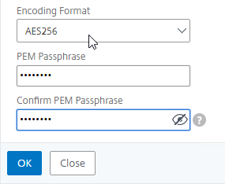
- You can use the Manage Certificates / Keys / CSRs link to view the new PEM file.
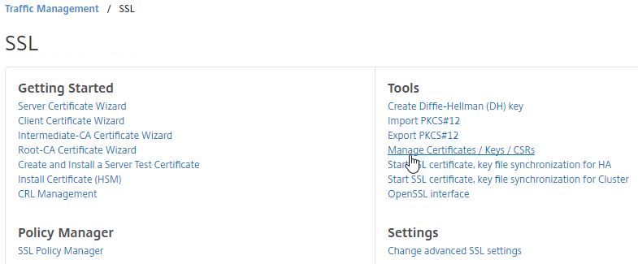
- Right-click the new file, and click View.
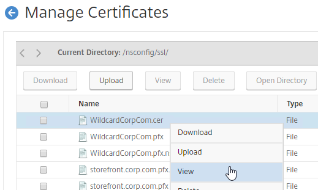
- Notice that the Private Key is encrypted.
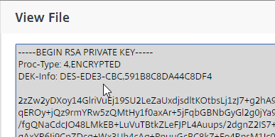
- If you scroll down, notice that the file contains both the certificate, and the RSA Private key.
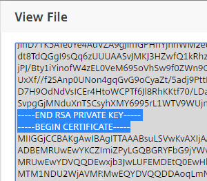
- Right-click the new file, and click View.
- Now that the PFX file has been converted to a PEM file, the PEM certificate file must be installed before it can be used.
- On the left side of the NetScaler Configuration GUI, go to Traffic Management > SSL > Certificates > Server Certificates.
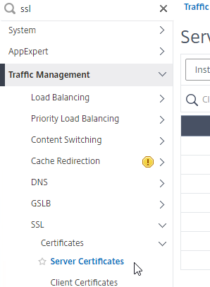
- On the right, click Install.
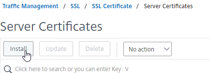
- In the Certificate-Key Pair Name field, enter a friendly name for this certificate.
- In the Certificate File Name field, click the drop-down next to Choose File, and select Appliance.
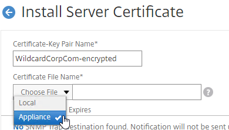
- Click the radio button next to the .cer file you just created, and click Open. The new file is probably at the bottom of the list.
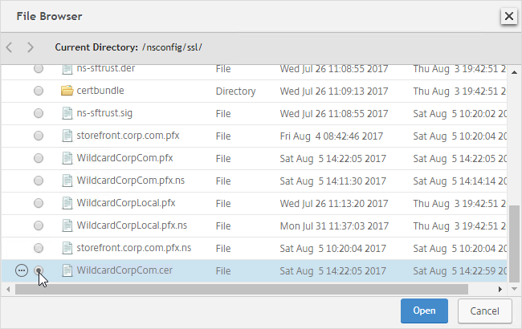
- NetScaler will ask you to enter the password for the encrypted private key.
- Click Install.
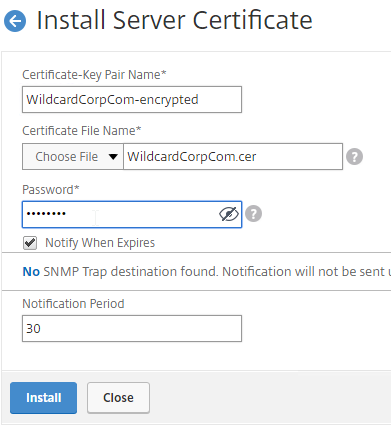
- On the left side of the NetScaler Configuration GUI, go to Traffic Management > SSL > Certificates > Server Certificates.
- You can now link an intermediate certificate to this SSL certificate, and then bind this SSL certificate to SSL and/or NetScaler Gateway Virtual Servers.
- To automatically backup SSL certificates and receive notification when the certificates are about the expire, deploy NetScaler Management and Analytics System. Also see Citrix CTX213342 How to handle certificate expiry on NetScaler.
- You can also export the certificate files and use them on a different NetScaler.
Create Key and Certificate Request
If you want to create free Let's Encrypt certificates, see John Billekens' PowerShell script detailed at Let’s Encrypt Certificates on a NetScaler.
You can create a key pair and Certificate Signing Request (CSR) directly on the NetScaler appliance. The CSR can then be signed by an internal, or public, Certificate Authority.
Most Certificate Authorities let you add Subject Alternative Names when creating (or purchasing) a signed certificate, and thus there’s no reason to include Subject Alternative Names in the CSR created on NetScaler. You typically create a CSR with a single DNS name. Then when submitting the CSR to the Certificate Authority, you type in additional DNS names.
- For a Microsoft Certificate Authority, you can enter Subject Alternative Names in the Attributes box of the Web Enrollment wizard.
- For public Certificate Authorities, you purchase a UCC certificate or purchase a certificate option, that lets you type in additional names.
To create a key pair on NetScaler
- On the left, expand Traffic Management, expand SSL, and click SSL Files.
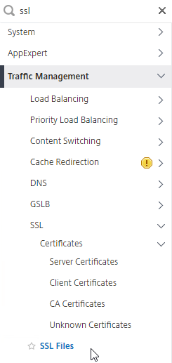
- On the right, switch to the Keys tab.
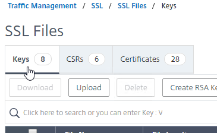
- Click Create RSA Key.
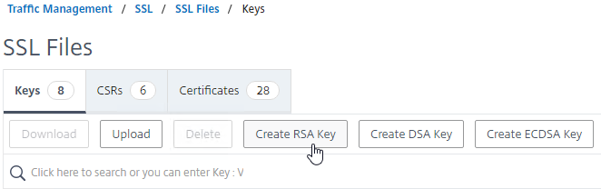
- In the Key Filename box, enter a new filename (e.g. wildcard.key). Key pair files typically have a .key extension.
- In the Key Size field, enter 2048 bits.
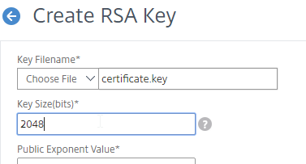
- By default, the private key is unencrypted. To encrypt it, set the PEM Encoding Algorithm drop-down to AES256 (if NetScaler 12.1 build 49 or newer) or DES3.
- Enter a password to encrypt the private key.
- Click Create.
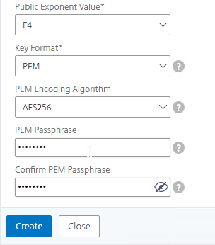
- To view the new file:
- Go to Traffic Management > SSL.
- On the right, in the right column, click Manage Certificates / Keys / CSRs.
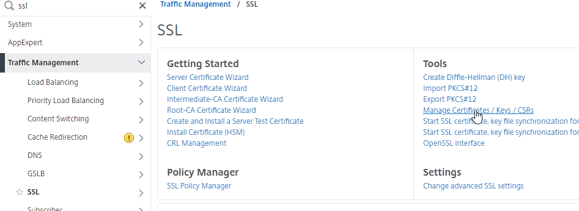
- Scroll down to the new file, right-click it, and click View.
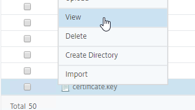
- The Private Key should be encrypted with your chosen encoding algorithm.
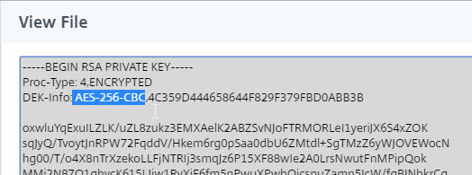
To create CSR file
- Back in the SSL Files page, on the right, switch to the CSRs tab.
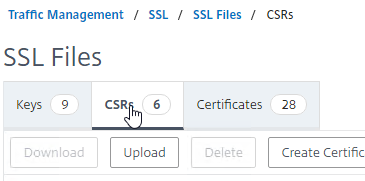
- Click Create Certificate Signing Request (CSR).
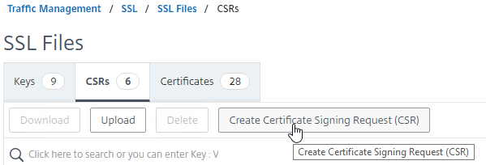
- In the Request File Name field, enter the name of a new CSR file. CSR files typically have .csr or .txt extension.
- In the Key Filename field, click Choose File and select the previously created .key file. It's probably at the bottom of the list.
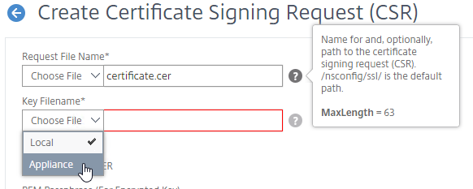
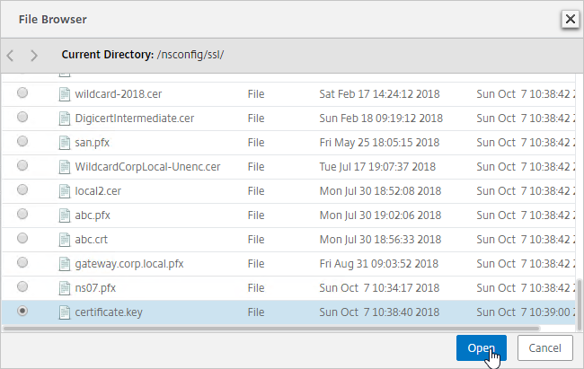
- If the key file is encrypted, enter the password.
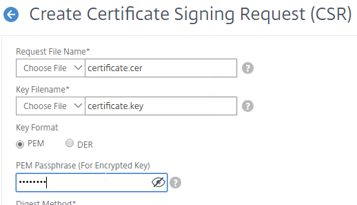
- You can optionally change the CSR Digest Method to SHA256. This only applies to the CSR and does not affect the CA-signed certificate.
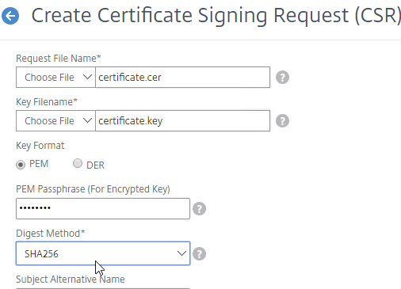
- Newer builds of NetScaler let you specify up to three Subject Alternative Names in the CSR. Some Certificate Authorities ignore this field and instead require you to specify the Subject Alternative Names when purchasing the signed certificate. See CTX232305 How to create a SAN CSR in NetScaler 12.0 57.19.
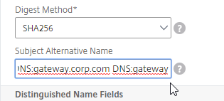
- In the Common Name field, enter the FQDN of the SSL enabled-website. If this is a wildcard certificate, enter * for the left part of the FQDN. This is the field that normally must match what users enter into their browser address bars.
- In the Organization Name field, enter your official Organization Name.
- Enter IT, or similar, as the Organization Unit.
- Enter the City name.
- In the State field, enter your state name without abbreviating.
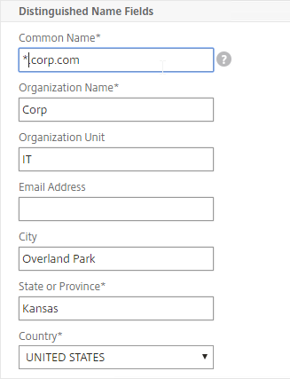
- Scroll down and click Create.
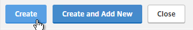
- Right-click the new .csr file, and click Download.
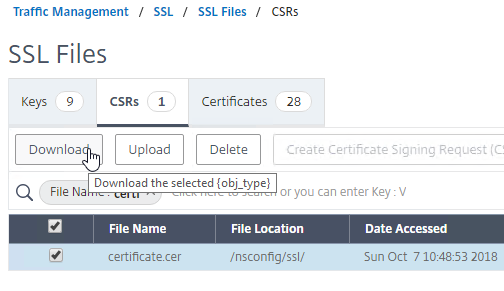
Get CSR signed by CA, and install certificate on NetScaler
- Open the downloaded .csr file with Notepad, and send the contents to your Certificate Authority.
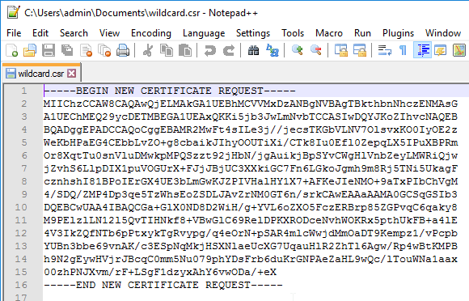
- Chrome requires every certificate to have at least one Subject Alternative Name that matches the FQDN entered in Chrome's address bar. Public CAs will handle this automatically. But for Internal CAs, you typically must specify the Subject Alternative Names manually when signing the certificate.
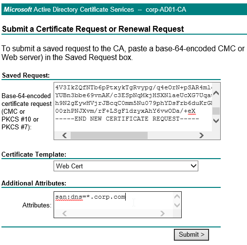
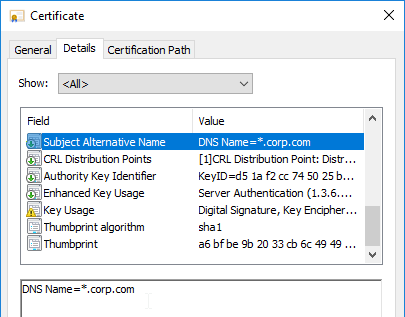
- If the CA asks you for the type of web server, select Apache, or save the CA response as a Base 64 file.
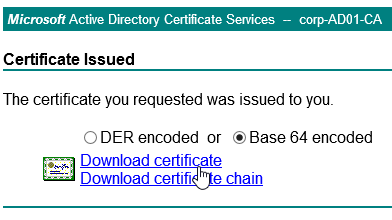
- Chrome requires every certificate to have at least one Subject Alternative Name that matches the FQDN entered in Chrome's address bar. Public CAs will handle this automatically. But for Internal CAs, you typically must specify the Subject Alternative Names manually when signing the certificate.
- After you get the signed certificate, on the left side of the NetScaler Configuration GUI, expand Traffic Management > SSL > Certificates, and click Server Certificates.
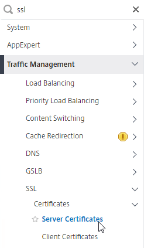
- On the right, click Install.
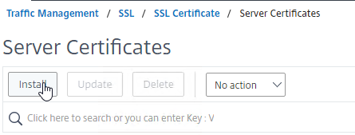
- In the Certificate-Key Pair Name field, enter a friendly name for this certificate.
- In the Certificate File Name field, click the drop-down next to Choose File, and select Local.
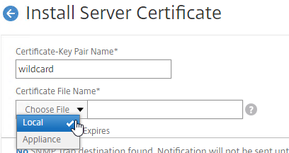
- Browse to the Base64 (Apache) .cer file you received from the Certificate Authority.
- In the Key File Name field, click the drop-down next to Choose File, and select Appliance.
- Select the key file you created earlier, and click Open. It's probably at the bottom of the list.
- If the key file is encrypted, enter the password.
- Click Install.
- The certificate is now added to the list.
- You can now link an intermediate certificate to this SSL certificate, and then bind this SSL certificate to SSL and/or NetScaler Gateway Virtual Servers.
- To automatically backup SSL certificates and receive notification when the certificates are about the expire, deploy Citrix NetScaler Management and Analytics. Also see Citrix CTX213342 How to handle certificate expiry on NetScaler.
- You can also export the certificate files and use them on a different NetScaler.
Intermediate Certificate
If your Server Certificate is signed by an intermediate Certificate Authority, then you must install the intermediate Certificate Authority’s certificate on the NetScaler. This Intermediate Certificate then must be linked to the Server Certificate.
To get the correct intermediate certificate
- Log into Windows, and double-click the signed certificate file.
- On the Certification Path tab, double-click the intermediate certificate (e.g. Go Daddy Secure Certificate Authority. It’s the one in the middle).
- On the Details tab, click Copy to File.
- In the Welcome to the Certificate Export Wizard page, click Next.
- In the Export File Format page, select Base-64 encoded, and click Next.
- Give it a file name, and click Next.
- In the Completing the Certificate Export Wizard page, click Finish.
To import the intermediate certificate
- In the NetScaler configuration GUI, expand Traffic Management, expand SSL, expand Certificates, and click CA Certificates.
- On the right, click Install.
- Name it Intermediate or similar.
- Click the arrow next to Choose File, select Local, and browse the Intermediate certificate file.
- Click Install.
Link Intermediate Certificate to Server Certificate
- Go back to Traffic Management > SSL > Certificates >Server Certificates.
- Right-click the server certificate, and click Link.
- The previously imported Intermediate certificate should already be selected. Click OK.
- You might be tempted to link the Intermediate certificate to a Root certificate. Don't do this. Root certificates are installed on client machines, not on NetScaler. NetScaler must never send the root certificate to the client device.
Export Certificate Files from NetScaler
You can easily export certificate files from the NetScaler, and import them to a different NetScaler.
- Go to Traffic Management > SSL > Certificates > Server Certificates.
- Move your mouse over the certificate you want to export, and then click the information icon on the far left.
- Note the file names. There could be one or two file names.
- On the left, go to Traffic Management > SSL.
- On the right, in the right column, click Manage Certificates / Keys / CSRs.
- Find the file(s) in the list, right-click it, and click Download.
- While it seems like you can download multiple files, actually, it only downloads one at a time.
- You might have to increase the number of files shown per page, or go to a different page.
- Also download the files for any linked intermediate certificate.
- You can now use the downloaded files to install certificates on a different NetScaler.
Default Management Certificate Key Length
To see the key size for the management certificate, right-click the ns-server-certificate (Server Certificate), and then click Details.
If the management certificate key size is less than 2048 bits, simply delete the existing ns-server-certificate certificate files, and reboot. NetScaler will create a new management certificate with 2048-bit keys.
- Go to Traffic Management > SSL.
- On the right, in the right column, click Manage Certificates / Keys / CSRs.
- Highlight any file named ns-* and delete them. This takes several seconds.
- Then go to the System node, and reboot.
- After a reboot, if you view the Details on the ns-server-certificate, it will be recreated as self-signed, with 2048-bit key size.
Replace Management Certificate
You can replace the default management certificate with a new trusted management certificate.
High Availability - When a management certificate is installed on one node of a High Availability pair, the certificate is synchronized to the other node, and used for the other node's NSIP. So make sure the management certificate matches the DNS names of both nodes. This is easily doable using a Subject Alternative Name certificate. Here are some names the management certificate should match (note: a wildcard certificate won’t match all of these names):
- The FQDN for each node's NSIP. Example: ns01.corp.local and ns02.corp.local
- The shortnames (left label) for each node's NSIP. Example: ns01 and ns02
- The NSIP IP address of each node. Example: 192.168.123.14 and 192.168.123.29
- If you enabled management access on your SNIPs, add names for the SNIPs:
- FQDN for the SNIP. Example: ns.corp.local
- Shortname for the SNIP. Example: ns
- SNIP IP address. Example: 192.168.123.30
If you prefer to create a separate management certificate for each HA node, then see CTP George Spiers How to secure management access to NetScaler and create unique certificates in a highly available setup. :idea:
Request Management Certificate
If you are creating a Subject Alternative Name certificate, it’s probably easiest to request a SAN certificate from an internal CA using the MMC Certificates snap-in on a Windows box.:
- Open the MMC certificates snap-in by running certlm.msc on a Windows 2012 or newer machine.
- Go to Personal, right-click Certificate, expand All Tasks, and click Request New Certificate.
- A web server certificate template should let you specify subject information.
- In the top half, change the Subject name > Type drop-down to Common Name. Enter a DNS name, and click Add to move it to the right.
- In the bottom half, change the Alternative Name > Type drop-down to either DNS or IP address (v4). Type in different names or IPs as detailed earlier, and click Add to move them to the right.
- On the Private Key tab, expand Key Options, and make sure Mark private key as exportable is checked.
- Then finish Enrolling the certificate.
- Export the certificate and Private Key to a .pfx file.
- On the NetScaler, if you want to encrypt the private key, then use the Traffic Management > SSL > Import PKCS#12 tool to convert the .pfx to PEM format.
- Then follow one of the procedures below to replace the management certificate.
Methods of replacing the Management Certificate
There are two methods of replacing the management certificate:
- In the NetScaler GUI, right-click ns-server-certificate, and click Update. This automatically updates all of the Internal Services bindings too. This method is intended for dedicated management certificates, not wildcard certificates. Notes:
- You cannot rename the ns-server-certificate in the NetScaler GUI. It remains as ns-server-certificate.
- ns-server-certificate cannot be bound to Virtual Servers. So make sure you are replacing it with a dedicated management certificate.
- Or manually Bind a new management certificate to each of the Internal Services.
Update Certificate Method
The Update Certificate button method is detailed below:
- You can’t update the certificate while connected to the NetScaler using https, so make sure you connect using http.
- On the left, expand Traffic Management, expand SSL, expand Certificates, and click Server Certificates.
- On the right, right-click ns-server-certificate, and click Update.
- Check the box next to Click to update the certificate and key.
- Click Choose File, and browse to the new management certificate. It could be on the appliance, or it could be on your local machine.
- If the PEM private key is encrypted, enter the password.
- Check the box next to No Domain Check. Click OK.
- Click Yes to update the certificate.
- You can now connect to the NetScaler using https protocol. The certificate should be valid, and it should have a 2048 bit key.
Manual Binding Method
The manual Binding to Internal Services method is detailed below:
- You can’t update the certificate while connected to the NetScaler using https, so make sure you connect using http.
- On the left, expand Traffic Management, expand SSL, expand Certificates, and click Server Certificates.
- On the right, use the Install button to install the new management certificate.
- Go to Traffic Management > Load Balancing > Services.
- On the right, switch to the Internal Services tab.
- Right-click one of the services, and click Edit.
- Scroll down, and click where it says 1 Server Certificate.
- Click Add Binding.
- Click where it says Click to select.
- Click the radio button next to the new management certificate, and click Select.
- Click Bind, and click Close.
- Click Close.
- If Default SSL Profile is not enabled, then you can modify the SSL Parameters and/or Ciphers on each of these Internal Services.
- Repeat for the rest of the internal services. There should be at least 6 services. Additional Internal Services are created for SNIPs with management access enabled, and High Availability.
Force Management SSL
By default, administrators can connect to the NSIP using HTTP or SSL. This section details how to disable HTTP.
- Connect to the NSIP using https.
- On the left, expand System, expand Network, and click IPs.
- On the right, right-click your NetScaler IP, and click Edit.
- Near the bottom, check the box next to Secure access only, and then click OK.
-
If you are connected using http, the page will reload using https.
-
Repeat this procedure on the secondary appliance.
- Repeat for any SNIPs that have management access enabled.
Also see:
- Citrix CTX204217 How to redirect users from HTTP to HTTPS while accessing NSIP/Management IP. Requires a Responder policy, and a nsapimgr command.
SSL Certificate – Update
There are two options for updating a certificate:
- Create or Import a new certificate to NetScaler > Traffic Management > SSL > Certificates > Server Certificates. Then find all of the places the original certificate is bound, and manually replace the original certificate binding with the new certificate. This method is obviously prone to errors.
- On NetScaler, simply right-click the existing certificate, and click Update. This automatically updates all of the bindings. Much faster and easier.
To update a certificate using the Update method:
- Create an updated certificate, and export it as .pfx file (with private key). Don’t install the certificate onto NetScaler yet, but instead, simply have access to the .pfx file.
- In NetScaler, navigate to Traffic Management > SSL > Certificates > Server Certificates.
- On the right, right-click the certificate you intend to update, and click Update.
- Check the box next to Update the certificate and key.
- Click Choose File > Local, and browse to the updated .pfx file.
- NetScaler will prompt you to specify the .pfx file password.
- Click OK. This will automatically update every Virtual Server on which this certificate is bound.
- Intermediate certificate - After replacing the certificate, you might have to update the cert link to a new Intermediate certificate.
- Right-click the updated certificate, and click Cert Links, to see if it is currently linked to an intermediate certificate.
- If not, right-click the updated certificate, and click Link, to link it to an intermediate certificate. If it doesn't give you an option to link it to, then you'll first have to install the new intermediate certificate on the NetScaler.
Certificates can also be updated in NetScaler Management and Analytics System.
Certificates can be updated from the CLI by running update ssl certKey MyCert. However, the certificate files must be stored somewhere on the appliance, and already be in PEM format.